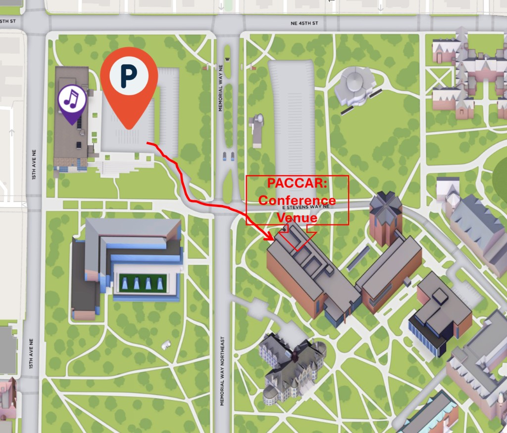
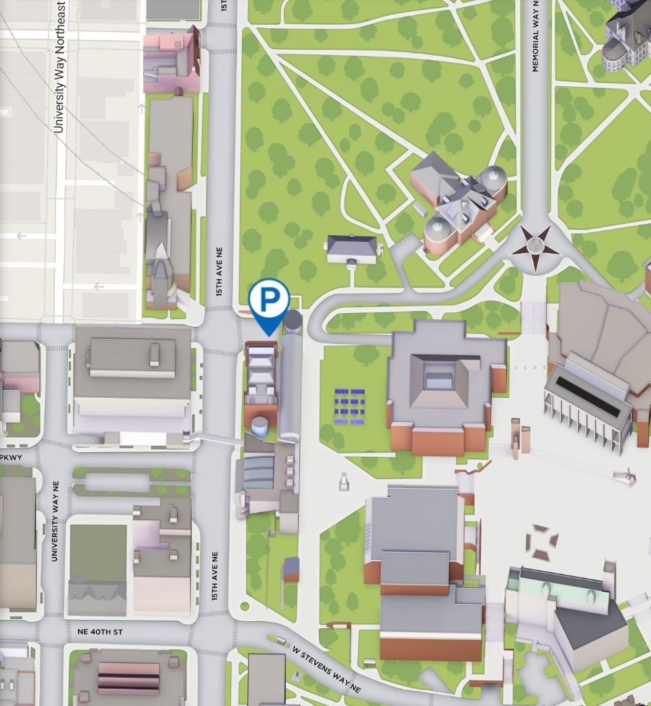

The 8th Neurodiversity at Work Research Conference will be held at PACCAR Hall at the Foster School of Business on the University of Washington Seattle campus.
PACCAR Hall serves as a dynamic hub for the Foster School of Business, focusing on open architectural layouts that facilitate team brainstorming and active learning. The building is part of a broader campus design that prioritizes inclusive environments where students can transition between high energy collaboration and quiet reflection.
Collaborative Hub: The facility features numerous open spaces and team rooms specifically designed for group workshops and business case analysis.
Neuroinclusive Features: Design elements include dedicated "recharge" spaces to manage sensory needs and a library for focused, quiet research.
Social Connectivity: The integrated Orin’s Cafe provides a centralized location for students to gather and decompress between academic sessions.
Inclusive Culture: The Thaddeus Spratlen Lounge offers a specific campus sanctuary dedicated to celebrating diversity and fostering a sense of belonging.
Nature Integration: Access to the nearby restored fountain and courtyard allows for mental breaks in a calming outdoor environment.
More information available in the video above!
Directions to conference venue
There are several ways to get to the conference venue.
Driving or Rideshare Apps
If you choose to drive or use Uber/Lyft, use this address for the exact location: PACCAR Hall, 4273 E Stevens Way NE, Seattle, WA 98195.
When using the Sound Transit Link light rail, use University of Washington Station as the destination.
Conference venue parking
There are several visitor parking options (found below):
Burke Museum of Natural History and Culture
Visitor parking at the Burke is the closest to the venue—about a three-minute walk across the street. Address: 4301 Memorial Way Northeast, Seattle, WA 98105.

From Burke area visitor parking, follow the path across Memorial Way NE to PACCAR Hall (Foster School), on E Stevens Way NE.
Central Parking Garage
Central Parking Garage is about a five-minute walk to the conference venue (enter from 15th Ave NE or Memorial Way NE). Address: 1320 NE Campus Pkwy, Seattle, WA 98195.

From the Central Parking Garage entrance on 15th Ave NE (near Cunningham Hall), follow the highlighted route east past Parrington and Denny Hall to PACCAR Hall—the conference venue at the Foster School. Open step-by-step walking directions in Google Maps.
Seattle is served primarily by Seattle–Tacoma International Airport (SEA-TAC), a major international hub with nonstop flights from many U.S. cities and abroad. SEA-TAC is about 14 miles south of downtown Seattle and is well connected by light rail, rideshare, and taxis. A convenient alternative is Paine Field (PAE) in Everett, about 25 miles north of Seattle, which offers a smaller, quieter airport experience with limited nonstop flights to select West Coast and U.S. destinations. Some travelers also choose Bellingham International Airport (BLI) or Portland International Airport (PDX), depending on flight availability and price, and then continue to Seattle by train or car.
GETTING to UW from SEA-TAC:Seattle–Tacoma International Airport (SEA) is approximately 15 miles from the University of Washington campus. The Link light rail runs directly from Sea-Tac Airport Station to University of Washington Station in about 45 minutes, with no transfers required, making it an easy and affordable option.
Accommodations
We have curated several lodging options to meet your various needs and budgets, including University of Washington housing options. Please review the options below.
Conference guests choosing this option will reside in double- or single-occupancy rooms with a private bathroom, in a modern residence hall; all rooms are furnished with twin-size beds, desks, bedding, towels, a small fan, and soap. Telephones providing conference guests with free local service are available at the Oliver Hall Conference Desk. University of Washington residence halls are passively ventilated and not air conditioned. The University of Washington is a pedestrian campus, and the residence halls are within a five- to fifteen-minute walk of most meeting facilities on campus and nearby attractions. Learn more about the offering on the HFS conference accommodations page. To book campus housing, sign in and reserve through the UW conference housing registration (Iris sign-in).
University of Washington residence halls are designed for adult usage, and facilities are not childproof. Adults are responsible for the supervision of their children at all times.
Campus housing parking: Complimentary parking is not available. We encourage people to take advantage of public transportation in the area. Parking availability is limited and not guaranteed. Additional information regarding parking is available on the UW Transportation Services website.
We have two campus housing rate options, which depend on when you are planning to check in.
If you are planning to check in on Monday June 22nd and check out on Wed June 24th (the standard conference window), the rate would be $217.59 per person for a double occupancy room (if you are going to share the room with someone this is the rate per person) or $323.59 per person for a single occupancy room (if you plan to have your own space). This rate is for the entire stay (2 nights).
If you plan to check in on Sunday June 21st, the rate would be $295.09 per person for the double occupancy and $454.09 for the single occupancy room. Again, that rate is for the entire stay (3 nights).
ADA accommodations: For ADA accommodations, please contact Conference Services directly at stayover@uw.edu.
This hotel is about one mile from the conference venue, toward the U District. The conference has secured a discounted rate starting at $235 per day. Click here to book now (group rate via the hotel booking page; use the hotel name link above for the property’s main site).
5036 25th Ave NE
Seattle, WA 98105
(206)526-5200 or (800)205-6940